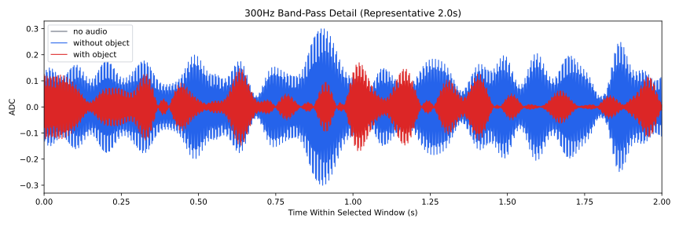
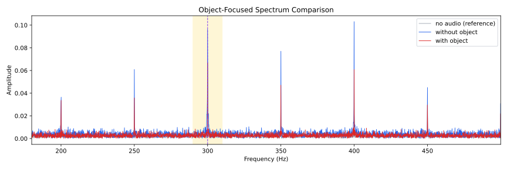
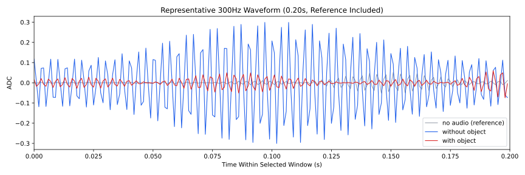
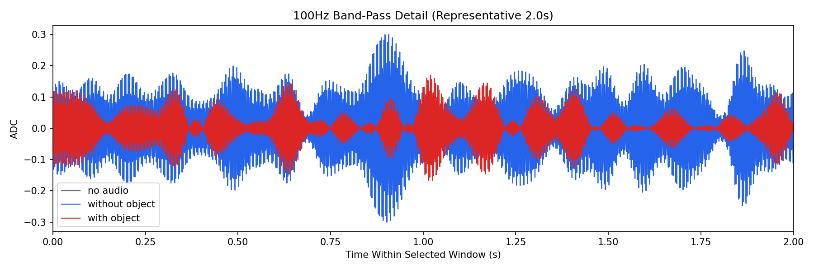
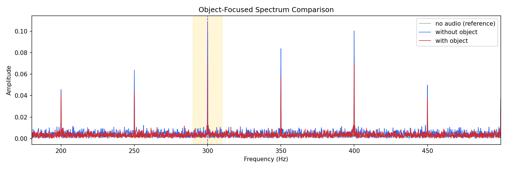

Background: F:\项目类文件夹\异物检测4.10\Data_Dual\frequency_sweep\0300Hz\repeat_03\raw\no_audio.csv
Without object: F:\项目类文件夹\异物检测4.10\Data_Dual\frequency_sweep\0300Hz\repeat_03\raw\without_object.csv
With object: F:\项目类文件夹\异物检测4.10\Data_Dual\frequency_sweep\0300Hz\repeat_03\raw\with_object.csv
| Metric | 无音频 | 100Hz无异物 | 100Hz有异物 | 无异物/无音频 | 有异物/无异物 | 有异物/无音频 |
|---|---|---|---|---|---|---|
| centered_rms | 0.107435 | 0.256540 | 0.188681 | 2.3879 | 0.7355 | 1.7562 |
| raw_target_amp | 0.007543 | 0.108916 | 0.074660 | 14.4396 | 0.6855 | 9.8982 |
| filtered_rms | 0.024399 | 0.103468 | 0.061262 | 4.2406 | 0.5921 | 2.5108 |
| filtered_target_amp | 0.007543 | 0.108916 | 0.074660 | 14.4396 | 0.6855 | 9.8982 |
| filtered_energy_ratio | 0.051578 | 0.162667 | 0.105421 | 3.1538 | 0.6481 | 2.0439 |
| window_filtered_target_amp_mean | 0.011960 | 0.131062 | 0.067625 | 10.9585 | 0.5160 | 5.6543 |
| window_filtered_target_amp_std | 0.009738 | 0.041229 | 0.029477 | 4.2340 | 0.7150 | 3.0271 |




